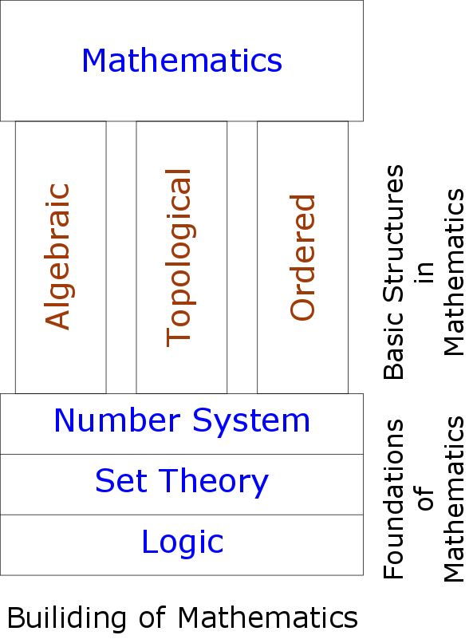
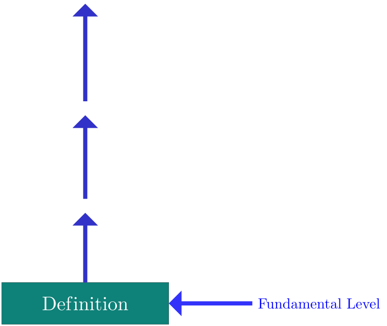
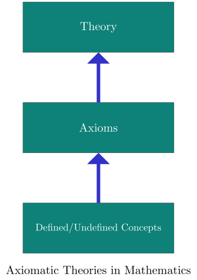

Mathematics is a study of sets with structures. There are three basic structures.
Algebraic Structure
Topological Structure
Ordered Structure
For example if we are studying arithmetic of real numbers then we are
studying the algebraic structure <R,+,.>.
The study of Group theory is a study of the structure <G,∗>,
where ∗
is a binary operation on set G
satisfying certain properties. The study of metric spaces is the study of the
structure <X,d>
where the function d:X×X→R
satisfies certain properties.
Mathematics may broadly be categorised in the following branches.
Pure Mathematics: Algebra(Group Theory,Ring Theory,Field
Theory,Vector Spaces, Matrices and Determinants etc.), Analysis(Real
Analysis, Complex Analysis), Topology, Differential Equations, Number
Theory,Geometry...
The above classification is not the precise one. The mode of study and
approach of certain theory may categorise it in different branches.
2 Logic as foundation of Mathematics

The Logic forms foundation for Mathematics. The Logic is the language of
Mathematics. The rules of logic distinguishes between valid and invalid statements in
Mathematics. Any proof in Mathematics can be translated into a sequence of logical
statements and the validity of proofs can be established by using the rules of
inferences. If there seems a problem with some proof (or argument), its validity may
be checked by translating it into a sequence of logical statements and then applying
rules of inferences. To ideal course on Foundations of Mathematics will have the following outline.
Logic →
Set theory →
Number System
Ex. Is the statement 2≤3
true? Justify your answer. Ans: The statement 2≤3 is logically
equivalent to the statement 2<3 or 2=3.
Here the first statement is true and the second is false. The disjunction
p∨q is true when
p is true and
q is false. Refer to the truth
table of p∨q. It now follows
that the statement 2≤3
is true.
This example illustrates the use of rules of logic in understanding the clear
meaning of statements in Mathematics. The or in Mathematics (disjunction
∨) is always inclusive or.
The statement p∨q is true
when at least one of p
and q is true.
The statement p∨q
is true includes three possibilities.
p
is true and q
is false
p
is false and q
is true
p
is true and q
is true
It includes the third possibility. So is inclusive or. (There is an exclusive or
in logic which is true when exactly one of p
and q
is true.)
Ex. Prove that the empty set ϕ
is subset of every set. Ans: Let S
be a set. Consider the statement
x∈ϕ⇒x∈S…(I)
It is a conditional statement p⇒q,
where the statement p is false
and the statement q may be
true or false. If p is false then
the conditional statement p⇒q
is true (vacuously true). Refer to the truth table of
p⇒q. It follows that the
statement (I) is true,
which means that ϕ
is a subset of S.
Ex. Prove that the empty set ϕ
is a semi-group. Ans: Semi-group: G
is a set and ∗:G×G.
The structure <G,∗>
is a semi-group if
∗
is associative i.e. (a∗b)∗c=a∗(b∗c)
for all a,b,c∈G
The above definition can be written as Semi-Group: G
is a set and ∗:G×G.
The structure <G,∗>
is a semi-group if
a,b,c∈G⇒(a∗b)∗c=a∗(b∗c)
The property a,b,c∈G⇒(a∗b)∗c=a∗(b∗c)
in a definition is a conditional statement
p⇒q. For
G=ϕ, the statement is
a,b,c∈ϕ⇒(a∗b)∗c=a∗(b∗c).
The hypothesis p:a,b,c∈ϕ is false.
If p is false then the
conditional statement p⇒q
is true (vacuously true). Refer to the truth table of
p⇒q. It follows that the statement
a,b,c∈ϕ⇒(a∗b)∗c=a∗(b∗c)
is true, which means that ϕ
is a semi-group.
Ex. Prove that the empty set ϕ
is not a group. Ans: In algebra texts, the reader may find the following two (equivalent) definitions
of groups. Group: G is a
non-empty set and ∗:G×G.
The structure <G,∗>
is a group if
∗
is associative i.e. (a∗b)∗c=a∗(b∗c)
for all a,b,c∈G
There is an identity element for ∗
in G
i.e. there is e∈G
such that a∗e=e∗a=a
for all a∈G
Every element in G
has inverse with respect to ∗
i.e. for every a∈G
there is b∈G
such that a∗b=b∗a=e
OR Group: G is a
set and ∗:G×G. The
structure <G,∗>
is a group if
∗
is associative i.e. (a∗b)∗c=a∗(b∗c)
for all a,b,c∈G
There is an identity element for ∗
in G
i.e. there is e∈G
such that a∗e=e∗a=a
for all a∈G
Every element in G
has inverse with respect to ∗
i.e. for every a∈G
there is b∈G
such that a∗b=b∗a=e
According to the first definition of group, the empty set is not a group. The second
definition can be written as Group: G is a
set and ∗:G×G. The
structure <G,∗>
is a group if
a,b,c∈G⇒(a∗b)∗c=a∗(b∗c)
∃e∈G∀a∈G(a∗e=e∗a=a)
∀a∈G∃b∈G(a∗b=b∗a=e)
The second property is not true for the empty set as it doesn’t contain any element.
Hence the empty set is not a group.
3 Role of definitions
There are two important properties of definitions.
The definition is always fundamental in Mathematics. Let’s see an example. i2 =i.i =√−1√−1 =√(−1)(−1)=√1 =1 We proved that i2=1!
Where is the mistake? The mistake is in the step
√a√b=√ab.
This rule is valid only when a
and b
are non-negative. But more important question is
What is the proper way to calculate the value ofi2.
The answer is: use DEFINITION of product of two
complex numbers. The complex numbers are defined as
a+ib
where a,b∈R
and i
denotes the symbol √−1.
Then addition, substraction, multiplication and division of complex
numbers are defined. The multiplication of complex numbers is defined
as
(a+ib)(c+id)=(ac−bd)+i(ad+bc)
So the proper way to calculate the value of
i2
is i2 =i.i =(0+1i)(0+1i) =(0−1)+(0+0)i =−1

Definitions are always fundamental in Mathematics. Everything in
Mathematics begins with definitions. We can’t argue with
definitions. We have to accept definitions. If you think some
argument is not correct,go back to the definitions and then start
from it.
Every definition in Mathematics is if and only if or biconditional (p⇔q)
type of statement. Examples: Definition: A real number x
is positive if and only if x>0
A real number xis positive ⇔x>0
So if real number x
is positive then x>0.
Conversely if x>0
then x
is positive real number.
Definition: △ABC
is equilateral if and only if all sides of
△ABC
have equal lengths.
△ABCis
equilateral ⇔all sides of △ABChave equal lengths.
So if △ABC is equilateral
then all sides of △ABC
have equal lengths. Conversely if all sides of
△ABC have equal
lengths then △ABC
is equilateral.
It is important to note that Every definition in Mathematics is of this type.
The standard convention is to write if instead of if and only if . So the above
definitions could be stated as
Definition: A real number x
is positive if x>0
Definition: △ABC is
equilateral if all side of △ABC
have equal lengths.
In above definitions, if means if and only if . The both way implications are used. For
example, if △ABC
is equilateral then we shall use the fact that all side of
△ABC
have equal lengths. On the other hand to prove that
△ABC
is equilateral, we shall prove that all sides of
△ABC
have equal lengths.
4 Axiomatic Theories in Modern Mathematics
The theories in Mathematics are of axiomatic types.

There are defined/undefined concepts and axioms for these concepts. Based on these
axioms, theories are developed. For example in Euclidean geometry, point is undefined
concept and based on certain axioms; the Euclidean geometry is developed. In set theory,
set is undefined concept and based on certain axioms; the set theory is developed. In
many introductory texts on Real Analysis or Calculus, it is assumed that there is a
set R of
real numbers (undefined concept) and algebraic,ordered and completeness
properties (axioms) are stated based on which the properties of real numbers are
proved.
5 Sets
The set is the most fundamental concept of Mathematics. The meaning
is that anything and everything that we deal with in Mathematics
is ultimately a set. For example, a relation (binary relation) on set
A is a subset
(set) of A×A. A
function f:A→B is a
subset (set) of A×B.
A sequence is a function and so it is also a set. The cardinal numbers are
equivalence classes (of similarity relation) and so they are sets. The ordered pair
(x,y) is defined
as (x,y)={{x},{x,y}}
and so it is a set. The series of real numbers (defined as ordered pair
of two sequences) is also a set. You may be surprised to know that
numbers are also sets. For example,the natural numbers are defined as
0=ϕ,1={0}={ϕ},2={1,0}={{ϕ},ϕ}….
The reader may find that the rigorous treatment of set theory is not so
easy. It has taken centuries to formalize the logic and set theory in rigorous
way. For example, what is the concept of the empty set? It is an axiom
that the empty set exists. The empty set is a set containing no elements.
Intuitively set can be thought as a collection of objects. So how a set can be
empty? (The analogy may be helpful in this case. The sets can be thought as
boxes containing objects and then the empty set is a box containing no
object)
About the uniqueness of empty set. A−A=ϕ
and B−B=ϕ' for
sets A and
B. So whether
both ϕ
and ϕ'
are equal. It is by axiom that empty set is unique.
6 Cardinality of Sets
Intuitively the cardinality of sets can be thought as a number of elements in
a set. Two sets have same cardinality if there is one-to-one correspondence
between them. If there is one to one correspondence between two sets then
they are similar. The similarity is an equivalence relation on the collection
of sets. The cardinality of a set may rigorously be defined as an equivalence
class of this relation.
A set is infinite if it is similar to a proper subset of itself.
A set is finite if it is empty or can be put in one-to-one correspondence with
the set {1,2,3,…,n}
for some positive integer n.
A set is denumerable if it can be put in one-to-one correspondence with the
set {1,2,3,…,}
for some positive integer n.
The cardinality of denumerable sets is denoted by χ0.
Empty set is the only set with cardinality 0.
Intuitively, a set is countable if its element can be counted as 1,2,3,…
i.e. as first element, second element, third element,....A set is countable
if it is finite or denumerable (Note: in some texts, denumerable sets are
defined as coutable).
A set is uncountable if it is not countable.
I:
1
2
3
⋯
↓
↓
↓
↓
⋯
N:
1
2
3
⋯
This proves that the set I
of positive integers is denumerable and hence counatable.
I:
1
2
3
⋯
↓
↓
↓
↓
⋯
N:
2
4
6
⋯
This proves that the set 2N
of positive even integers is denumerable and hence countable.
I:
1
2
3
⋯
↓
↓
↓
↓
⋯
Z:
0
−1
1
⋯
This proves that the set Z
of integers is denumerable and hence countable. The rationals too can be counted. So the set
Q of
rationals is denumerable and hence countable.
A subset of countable set is countable.
A countable union of countable sets is countable. So a finite union
of finite sets is finite(countable), a finite union of denumerable sets is
denumerable(countable), a denumerable union of finite sets is countable
and a denumerable union of denumerable sets is denumerable (countable).
A finite cartesian product of finite sets is finite (countable).
A finite cartesian product of denumerable sets is denumerable (countable).
A denumerable cartesian product of denumerable sets is uncountable.
Thus a countable cartesian product of countable sets may not be
countable.
There is no way of counting the elements of the set Qc
of irrationals. Hence it is uncountable. If a≠b
then intervals (a,b).[a,b],[a,b),(a,b]
are uncountable.
The Cantors theorem says that the cardinality of a set A
is always less than the cardinality of its power set P(A).
So there is no largest set. For if U
is the largest set then P(U)contains
more elements than U.
χ0
denotes the cardinality of denumerable set. It is the smallest possible
cardinal number that an infinite set can have.
|N|=|Z|=|Q|=χ0
|(a,b)|=|[a,b]|=|(a,b]|=|[a,b)|=|Q|=|R|=2χ0=c
n<χ0<2χ0<22χ0<.... There are infinitely many infinites in cardinal numbers...the smallest (unity)
is χ0.
7 Remarks on Definitions and Proofs
The definitions in Mathematics are of fundamental importance.
It is advised to write definitions in few different (and equivalent)
ways. Try to write every definition as a biconditional statement
p⇔q. The
clear understanding of definitions will ease out the learning curve of any theory. Once
the definition is understood, you may try to write it in your own way. This may be
used as a test of understanding.
The proofs are to be avoided in paragraphs. If proofs are written as a sequence of
logical statements (step by step), they are better understood. This may not be
possible for the lengthy and complex proofs. However proofs may be divided in
parts and sub-proofs may be written as a sequence of logical statements.
The proof is not completely understood unless one can view it as a single
idea.
Most of the statements in Mathematics may be written as a conditional statement
p⇒q. The direct
proofs may be preferred whenever possible in proving conditional statements. In direct proofs,
one begin with p
and after a sequence of logical statements it ends with
q.
statement p
⇒ statement 1
⇒ statement 2
⇒⋯⋯⋯⋯
⇒ statement q
The one reason why Mathematics is difficult is because it is abstract. Whenever
possible, graphs, pictures and diagrams should be drawn.Visualisations and analogies
are helpful for understanding abstract concepts. This is specially true in
calculus,analysis or metric spaces.